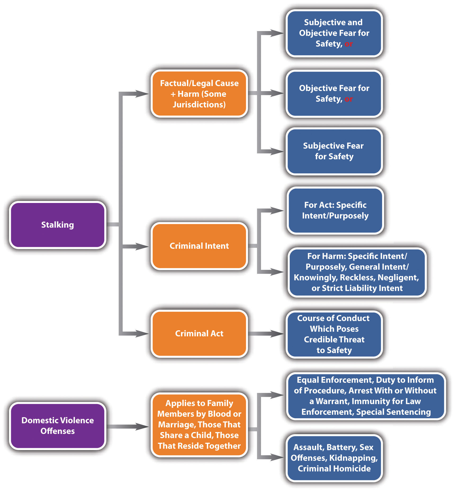

Domestic violenceCriminal conduct between family members or those who reside together. and stalkingA course of conduct that poses a credible threat to safety or damage to property, including following, harassing, and pursuing the victim. are modern crimes that respond to societal problems that have escalated in recent years. Domestic violence statutes are drafted to address issues that are prevalent in crimes between family members or individuals living in the same household. Stalking generally punishes conduct that is a precursor to assault, battery, or other crimes against the person, as is explored in Section 10.3 "Domestic Violence and Stalking".
Domestic violence statutes generally focus on criminal conduct that occurs between family members. Although family cruelty or interfamily criminal behavior is not a new phenomenon, enforcement of criminal statutes against family members can be challenging because of dependence, fear, and other issues that are particular to the family unit. In addition, historical evidence indicates that law enforcement can be reluctant to get involved in family disputes and often fails to adequately protect victims who are trapped in the same residence as the defendant. Specific enforcement measures that are crafted to apply to defendants and victims who are family members are an innovative statutory approach that many jurisdictions are beginning to adopt. In general, domestic violence statutes target crimes against the person, for example, assault, battery, sex offenses, kidnapping, and criminal homicide.
The purpose of many domestic violence statutes is equal enforcement and treatment of crimes between family members and maximum protection for the domestic violence victim.RCW § 10.99.010, accessed February 21, 2011, http://apps.leg.wa.gov/rcw/default.aspx?cite=10.99.010. Domestic violence statutes focus on individuals related by blood or marriage, individuals who share a child, ex-spouses and ex-lovers, and individuals who reside together.Ariz. Rev. Stat. § 13-3601(A), accessed February 21, 2011, http://www.azleg.state.az.us/ars/13/03601.htm. Domestic violence statutes commonly contain the following provisions:
California was the first state to enact a stalking law in 1990, in response to the high-profile murder of a young actress named Rebecca Schaeffer whose attacker stalked her for two years. Now all states and the federal government have stalking laws.18 U.S.C. § 2261A, accessed February 22, 2011, http://www.ncvc.org/src/main.aspx?dbID=DB_Federal_Interstate_Stalking_Institute163#61a. Although statutes criminalizing stalking are gender-neutral, in reality, most stalking victims are women, and most stalking defendants are men.
Before the states enacted stalking laws, a victim who was threatened and harassed but not assaulted had no remedy except to go to court and obtain a restraining orderA court order forbidding the defendant from contacting or coming within a certain distance of the victim.. A restraining order is a court order mandating that the defendant neither contact nor come within a certain distance of the victim. If the defendant violated the restraining order, law enforcement could arrest him or her. Until a restraining order was in place, however, the defendant was free to continue frightening the victim. Restraining orders typically take some time to obtain. The victim must contact and employ an attorney and also set up a court hearing. For this reason, the restraining order method of preventing a defendant from stalking was cumbersome, ineffective, and frequently resulted in force or violence against the stalking victim.
The modern crime of stalking allows law enforcement to arrest and incapacitate defendants before they complete an assault, battery, or other violent crime against a victim. Like all crimes, stalking requires the defendant to commit a voluntary act supported by criminal intent. In many jurisdictions, stalking also has the elements of causation and harm, as is discussed in Section 10.3.2 "Stalking".
Various approaches have been made to criminalize stalking, and a plethora of descriptors now identify the stalking criminal act. In the majority of jurisdictions, the criminal act element required for stalking includes any course of conduct that credibly threatens the victim’s safety, including following,Tex. Penal Code § 42.072, accessed February 22, 2011, http://www.ncvc.org/src/main.aspx?dbID=DB_Texas176. harassing,Cal. Penal Code § 646.9, accessed February 22, 2011, http://www.ncvc.org/src/main.aspx?dbID=DB_California176 (accessed February 22, 1022). approaching,Md. Code Ann. § 3-802, accessed February 22, 2011, http://www.ncvc.org/src/main.aspx?dbID=DB_Maryland678. pursuing, or making an express or implied threat to injure the victim, the victim’s family member,Ala. Code § 13A-6-90, accessed February 22, 2011, http://www.ncvc.org/src/main.aspx?dbID=DB_Alabama390. or the victim’s property.Tex. Penal Code § 42.072(a) (1) (c), accessed February 22, 2011, http://www.ncvc.org/src/main.aspx?dbID=DB_Texas176. In general, credible threat means the defendant has the apparent ability to effectuate the harm threatened.S. D. Codified Laws § 22-19A-6, accessed February 22, 2011, http://www.ncvc.org/src/main.aspx?dbID=DB_SouthDakota123. The stalking criminal act is unique among criminal acts in that it must occur on more than one occasion or repeatedly.Colo. Rev. Stat. Ann. § 18-3-602, accessed February 22, 2011, http://www.ncvc.org/src/main.aspx?dbID=DB_Colorado285. The popularity of social networking sites and the frequency with which defendants use the Internet to stalk their victims inspired many states to specifically criminalize cyberstalkingThe use of the Internet or e-mail to commit stalking., which is the use of the Internet or e-mail to commit the criminal act of stalking.Alaska Stat. § 11.41.270 (b) (3) (F), accessed February 22, 2011, http://www.ncvc.org/src/main.aspx?dbID=DB_Alaska803.
Elliot tells Lisa on two separate occasions that he loves her. Lisa intensely dislikes Elliot and wants nothing to do with him. Although Elliot’s proclamations of love are unwelcome, Elliot probably has not committed the criminal act element required for stalking. Elliot’s behavior does not threaten Lisa’s safety or the safety of her family members or property. Thus Elliot may not be charged with and convicted of stalking in most jurisdictions.
Change the example in Section 10 "Example of a Case Lacking Stalking Act" so that Elliot tells Lisa he loves her on one occasion. Lisa frowns and walks away. Elliot then follows Lisa and tells her that he will “make her pay” for not loving him. Lisa ignores Elliot’s statement, climbs into her car, and drives away. Later that evening, Elliot rings Lisa’s doorbell. Lisa does not answer the door but yells at Elliot, telling him to leave. Disgruntled and angry, Elliot carves, “you will die for not loving me” into Lisa’s front door with his pocketknife.
Elliot’s conduct could constitute the criminal act element required for stalking in most jurisdictions. In this example, Elliot has followed Lisa and approached her, which is a repeated course of conduct. On two occasions Elliot threatened Lisa: once by telling her he will “make her pay” and again by carving a death threat into her front door. Keep in mind that Elliot’s threat to Lisa’s safety must be credible in many jurisdictions. Thus if Elliot is unable to actually harm Lisa for any reason, the trier of fact could find that he does not have the apparent ability to carry out his threat, and he could not be convicted of stalking.
The criminal intent element required for stalking also varies, depending on the jurisdiction. In most states, the defendant must commit the criminal act willfully or maliciously.Cal. Penal Code § 646.9, accessed February 22, 2011, http://www.ncvc.org/src/main.aspx?dbID=DB_California176 (accessed February 22, 1022). This indicates a specific intent or purposeful conduct. However, in states that require the victim to experience harm, a different criminal intent could support the harm offense element. States that include bad results or harm in their stalking statutes require either specific intent or purposely, general intent or knowingly, reckless intent, negligent intent, or strict liability (no intent) to cause the harm, depending on the state.“Criminal Stalking Laws,” Ncvc.org website, accessed February 22, 2011, http://www.ncvc.org/src/main.aspx?dbID=DB_State-byState_Statutes117.
Review the stalking act example in Section 10 "Example of Stalking Act". In the majority of states, Elliot must make the threatening statement and carve the threatening message into Lisa’s front door willfully or maliciously. However, the requirement that Elliot act with the intent to cause Lisa’s reaction to this conduct varies, depending on the jurisdiction. In some jurisdictions, Elliot must act with the specific intent or purposely to cause Lisa to suffer the stalking harm, which is generally fear for bodily safety, the safety of family members, or fear of damage to Lisa’s property. In others, Elliot can act to cause Lisa’s fear with general intent or knowingly, reckless intent, or negligent intent. In some jurisdictions, Elliot’s purpose or awareness as to Lisa’s feeling of fear is irrelevant because strict liability is the intent supporting the harm or bad results requirement.
In jurisdictions that require harm for stalking, the defendant’s criminal act must be the factual and legal cause of the harm, which is defined in Section 10 "Stalking Harm".
As stated previously, some states require a specific harm element in their stalking statutes. This element is defined differently depending on the state but generally amounts to victim fear. The fear is typically fear of bodily injury or death of the victimAla. Code § 13A-6-90, accessed February 22, 2011, http://www.ncvc.org/src/main.aspx?dbID=DB_Alabama390. or of the victim’s family member,Alaska Stat. § 11.41.270 (a), http://www.ncvc.org/src/main.aspx?dbID=DB_Alaska803. or damage to the victim’s property.Tex. Penal Code § 42.072(a) (1) (C), accessed February 22, 2011, http://www.ncvc.org/src/main.aspx?dbID=DB_Texas176. States also employ different tests to ascertain the harm element. States can require subjective and objective fear,Tex. Penal Code § 42.072, accessed February 22, 2011, http://www.ncvc.org/src/main.aspx?dbID=DB_Texas176. just subjective fear,Alaska Stat. § 11.41.270 (a), accessed February 22, 2011, http://www.ncvc.org/src/main.aspx?dbID=DB_Alaska803. or just objective fear.Md. Code Ann. § 3-802, accessed February 22, 2011, http://www.ncvc.org/src/main.aspx?dbID=DB_Maryland678. Subjective fear means the victim must actually experience fear. Objective fear means a reasonable victim under similar circumstances would experience fear.
Review the stalking act example in Section 10 "Example of Stalking Act". In jurisdictions that require subjective and objective victim fear as the harm element for stalking, Elliot must cause Lisa to experience fear that is reasonable under the circumstances. In a jurisdiction that requires only subjective victim fear, Elliot must cause Lisa to feel fear, either reasonably or unreasonably. In a jurisdiction that requires only objective fear, Elliot must act in a manner that would cause a reasonable victim under similar circumstances to experience fear. Keep in mind that if Lisa is aware of a circumstance that makes it unlikely that Elliot can carry out his threat, Elliot could not be convicted of stalking in a jurisdiction that requires Lisa to experience subjective fear.
Jurisdictions vary as to how they grade stalking. Many states divide stalking into degrees or grade it as simple and aggravated. First-degree or aggravated stalking is generally graded as a felony, and second-degree or simple stalking is generally graded as a misdemeanor.Alaska Stat. §§ 11.41.260, 11.41.270, accessed February 22, 2011, http://www.ncvc.org/src/main.aspx?dbID=DB_Alaska803. Factors that could enhance grading are the violation of a restraining or protective order, the use of a weapon, a youthful victim, or previous convictions for stalking.Alaska Stat. § 11.41.260, accessed February 24, 2011, http://www.ncvc.org/src/main.aspx?dbID=DB_Alaska803.
Figure 10.9 Diagram of Domestic Violence and Stalking
Answer the following questions. Check your answers using the answer key at the end of the chapter.